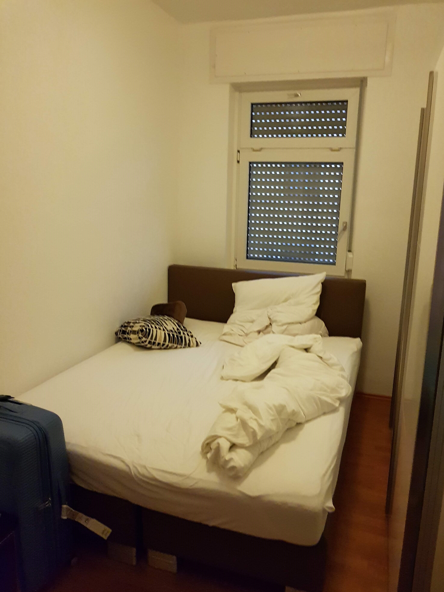

Hansen Lim
Originally Published on March 17th 2019, Updated on July 4th 2019
Exordium (Week 0, 28th Feb - 3 March)
Having our overseas internship at Period 1 in the new academic year, there wasn't exactly much time to prepare. To illustrate, we didn't even start packing until after our last exam (3 days before we were due to leave for Germany 😅) It was our first flight on the world's largest passenger jet (The A380, sadly ending production in 2021😢) and our longest ever yet.... Originally scheduled for 13 hours, it got delayed due to the closure of air space over Pakistan, so it became 14 and half hours.
Our friends sending us off!

Chilling at the Sunflower Gardens at Changi

location_on At Frankfurt Airport!
A train ride later, and we were in Karlsruhe and we went straight to our apartment (After 18 hours of travelling and being 7 hours behind Singapore Time, we had to take a rest 😴) After settling down, we went around exploring Karlsruhe.... We went to the Marktplatz (The shopping street), Schlossplatz (Palace Gardens) and Hochschule Karlsruhe Technik und Wirtschaft (The University where we are interning at). Since we didn't want to pay for the tram (Students get to ride for free although at the time, we weren't yet students), we essentially walked about 50km over 3 days!
Well, Week 0 is more for us to explore Karlsruhe before our internship period actually starts, so for more details, check out the newer posts!

Our in-flight breakfast

Our in-flight supper
home Our apartment in Karlsruhe!
